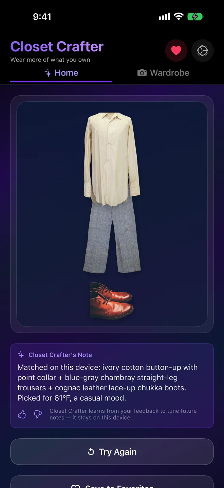
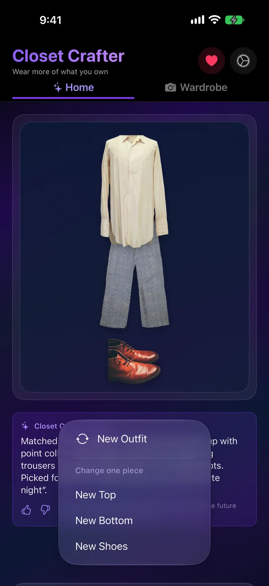
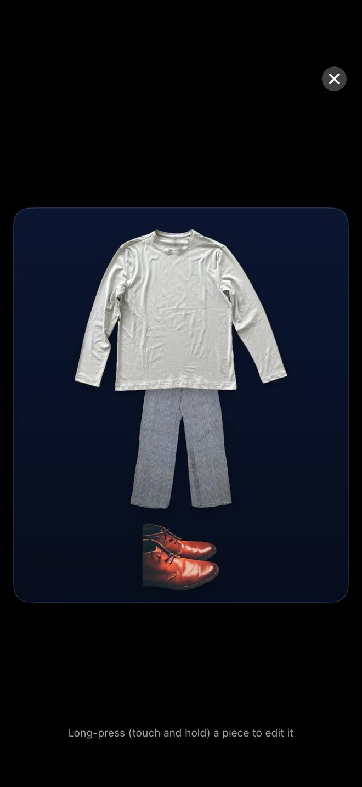
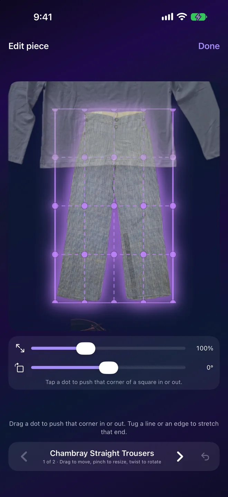
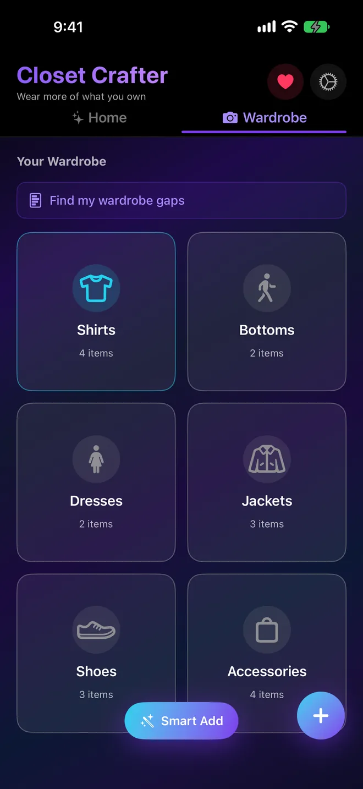
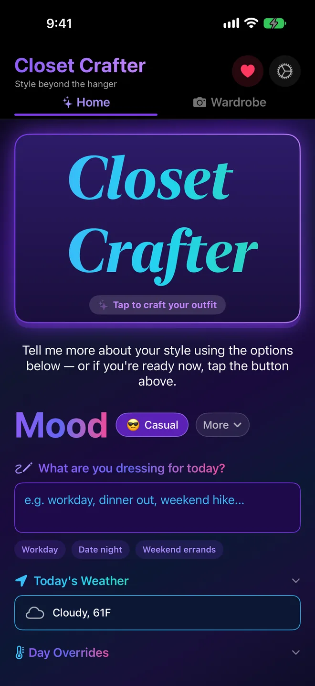

Smart Add
Snap one garment, a few at once, or a pile on the bed. Each piece is found, cut out from the background and sorted into the right category.
Wear more of what you own.
Photograph your clothes once. Closet Crafter puts them together into outfits for today's weather, your mood and wherever you're headed, right on your iPhone or iPad.
In beta on TestFlight. Coming to the App Store. Requires iOS 27.

Most of us wear a small slice of what we own. Closet Crafter keeps the whole wardrobe in view and does the matching for you, so the jacket at the back of the closet gets its turn.
Snap one garment, a few at once, or a pile on the bed. Each piece is found, cut out from the background and sorted into the right category.
One tap crafts a complete look from your own clothes, matched to the forecast, your mood and the occasion you type. Don't love the shoes? Swap just that piece.
Every swap, favorite and skip teaches it what you like and what you run warm or cold in. That learning stays on your device.
Point the camera at a mirror and the outfit is laid over your reflection, sized from your shoulders and hips, before you change a thing.
Touch and hold a garment to move, resize, tilt or reshape it. Clean Up erases tags, lint and hangers from a photo, done on your iPhone.
Today's Outfit on your Home Screen, "Craft an Outfit" with Siri, favorites saved for later, and your wardrobe synced through your own iCloud.
Screens from the current beta, filled with a sample wardrobe of public-domain clothing photos.





Out of the box, Closet Crafter works on your device. Garment photos are analyzed with Apple Intelligence on supported iPhones and iPads, outfits are picked on the device, and what it learns about your style stays there. Your wardrobe syncs only through your own private iCloud, and you can switch that off.
Closet Crafter Pro is optional. If you turn it on, garment photos and outfit requests go to our server and on to OpenAI for analysis and styling. The app tells you this before you switch it on, and nothing is sent until you do.
There are no ads, no tracking and no data sold. Your birthday is asked once, for the age check, and never leaves your device.
Beta testers can send feedback from TestFlight with a screenshot, or write to us any time.